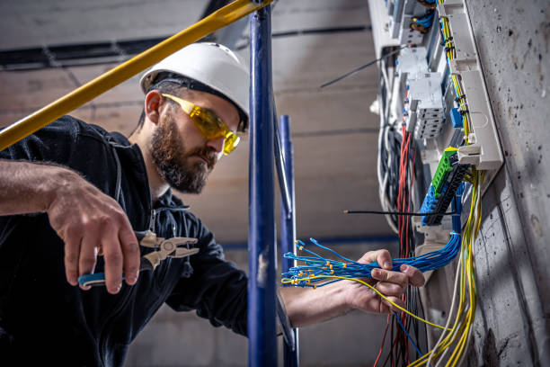

Temos os melhores eletricistas da região e estamos prontos para oferecer a melhor solução pra você!

O Eletricista é o profissional responsável por executar uma instalação elétrica, realiza vistorias que garantem o funcionamento adequado de qualquer sistema elétrico conforme as normas aplicadas no desenvolvimento e efetua reparos quando necessário em aparelhos, sejam elétricos ou eletrônicos ou até mesmo redes de distribuição de energia elétrica. A rede elétrica de um imóvel é um dos pontos mais importantes, pois trata da segurança de sua família, funcionários, clientes e demais pessoas. Um problema elétrico pode inclusive trazer enormes prejuízos e acabar com seu negócio.